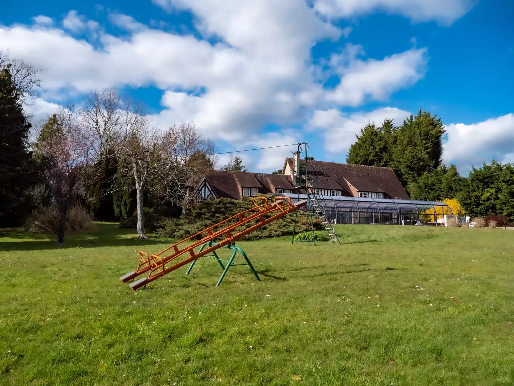
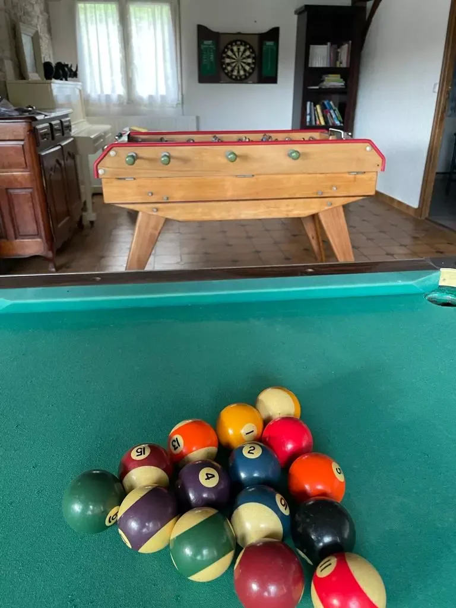

Le domaine
en famille.
Les jeunes Lions de tout âge sont bienvenus au domaine.

Les jeunes Lions de tout âge sont bienvenus au Domaine !
Tout est pensé pour leur bonheur et leur sécurité.
Le Domaine est calme est sécurisé, pas de route passante à proximité (nous sommes dans une impasse), vos enfants peuvent jouer en toute tranquillité.
Pour les plus petits:
Lits bébé sur demande, 2 confortables chaises hautes, 2 transats, une table à langer, une baignoire bébé, de la vaisselle enfant.Pour leur plus grand plaisir: un coffre rempli de jouets et de livres, des bouées bébé nageur (à partir de 6 mois et sous la surveillance de parents).

Pour les plus grands:
en Extérieur:
- Piscine avec des bouées et des jouets gonflables
- Court de tennis avec des raquettes et des balles à disposition
- Table de ping-pong, toujours avec des raquettes et des balles
- Terrain de pétanque avec les boules pour adultes et enfants, ainsi que le jeu de Mölky
- Panneau de basket, cages de foot, filet de volley et tous les ballons
- Véritable tyroliénne de 15m
- Trampoline géante de 5m
- Parcours Ninja Warrior
- Slack line
- Grand toboggan, balançoires et autres jeux

en Intérieur:
- Billard
- Baby-foot
- Fléchettes
- Piano
- Karaoké
- Console de jeux vidéo
- Bibliothèque pleine de livres !

Aux alentours:
Cerza – un de plus beau parcs animaliers de France – est à 5 min seulement ! Plus de 1500 animaux sauvages y vivent en semi liberté. Les grands félins de Cerza sont à l’origine du nom de notre Domaine : saurez-vous deviner pourquoi ?
Autres idées ainsi que l’genda de la région :
Pour le plaisir de parents, baby-sitting, activités ludiques (anglais, musique, poney…) peuvent être organisées sur demande.
Prenez vos repères dans la maison et le jardin.
Explorer les espaces en 360°